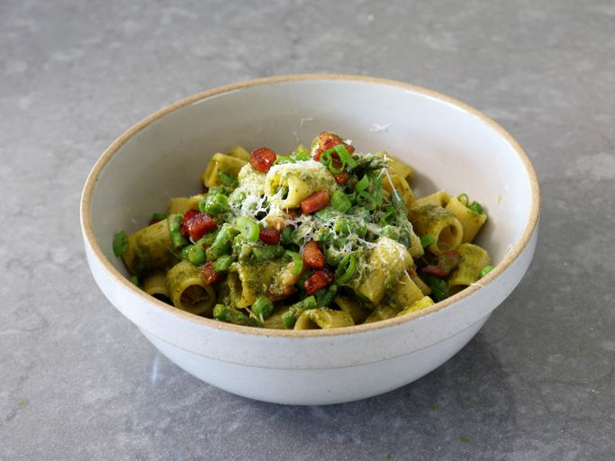

Home
Pancetta Primavera Rigatoni

Description:
This features the rare combo of something that’s rich and decadent, but also fresh and vibrant at the same time. And yes, you can use regular bacon for this, although as I mentioned in the video, bacon is smoked and pancetta is not. Besides deciding on which cured meat, if any, you can also add any other seasonal vegetables to this, just as long as you cook them ahead, or cut them small enough to cook in the pasta water. No matter what you use, I loved the balance between the pancetta, veggies, and herbaceous sauce, and I really do hope you give it a try soon. Enjoy!
Ingredients:
- 3 tablespoons olive oil, divided
- 8 ounces pancetta, diced
- ¼ cup sliced green onions
- 8 ounces mezzi rigatoni pasta
Steps to recreate:
- Pour 2 tablespoons of the olive oil to a large pan, and set heat to medium. Add diced pancetta, and cook, stirring occasionally, until pancetta is browned, and most of the fat has rendered out, 7 to 10 minutes. Turn off heat.
- Remove some pancetta and reserve to garnish the top if desired. Pour out some of the excess pancetta fat from the pan if desired, but leaving at least 2 or 3 tablespoons.
- Add green onions, and turn heat to medium-low. Sauté green onions for a few minutes to soften slightly, then turn off heat and reserve until pasta is cooked.